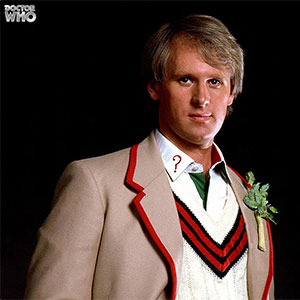

|
|||||||||||||
|
The Fifth DoctorPortrayed by Peter Davidson The Fifth Doctor is the fifth incarnation of the protagonist of the long-running BBC television science fiction series Doctor Who. He is portrayed by Peter Davison. Within the series' narrative, the Doctor is a centuries-old Time Lord alien from the planet Gallifrey who travels in time and space in his TARDIS, frequently with companions. When the Doctor is critically injured, he can regenerate his body; in doing so, his physical appearance and personality change. Davison portrays the fifth such incarnation, a staunch pacifist with a vulnerable side and a tendency towards indecisiveness, dressed as a boyish Edwardian cricketer. He travelled with a host of companions, including boy genius Adric (Matthew Waterhouse), alien aristocrat Nyssa (Sarah Sutton) and Australian flight attendant Tegan Jovanka (Janet Fielding), whom he had travelled alongside in his previous incarnation. He also shared later adventures alongside devious schoolboy Vislor Turlough (Mark Strickson) and American college student Peri Brown (Nicola Bryant). The Fifth Doctor was far more vulnerable, sensitive, and reserved than his previous incarnations and often reacted to situations rather than initiating them. Frequently, he made decisions by flipping a coin. Unlike his more authoritative predecessors, he treated his young companions as parts of a team, and often willingly participated in situations under the leadership of someone else who had the strong command presence that he apparently lacked. However, the Fifth Doctor's boyish appearance, nervous energy, and charm all hid the fact that he was a Time Lord of great age, compassion, and experience. He could decipher the ingredients of a drink by smell alone and rosemary made him sneeze. |
||||||||||||